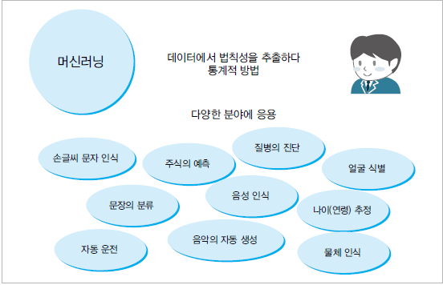
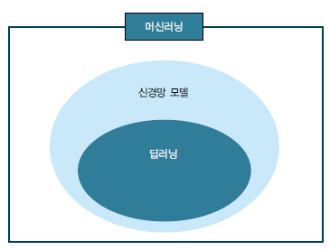
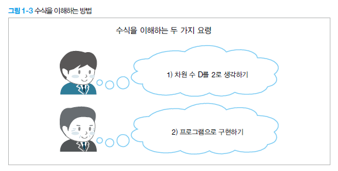
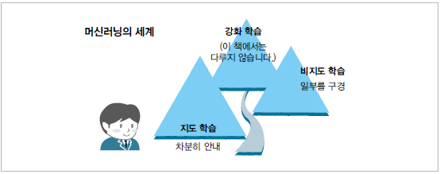

1. 이 수업에서 가장 먼저 이해할 것
데이터 분석은 단순히 코드를 많이 외우는 과정이 아닙니다. 실제 업무에서 생긴 데이터를 가져와서, 필요한 형태로 정리하고, 그래프와 통계로 의미를 확인한 뒤, 필요하면 AI 모델을 활용해 예측하는 과정입니다.
2. 머신러닝이란 무엇인가?
PPT에서는 머신러닝을 데이터에서 법칙성을 추출하는 통계적 방법으로 설명합니다. 쉽게 말하면, 사람이 모든 규칙을 직접 코딩하지 않고, 컴퓨터가 많은 데이터를 보고 패턴을 찾게 만드는 방식입니다.

예를 들어 엑셀에서 고객 데이터를 본다고 가정해 보겠습니다. 사람이 직접 보기에는 고객 수가 많아질수록 패턴을 찾기 어렵습니다. 하지만 머신러닝 모델은 구매 이력, 나이, 방문 횟수 같은 데이터를 보고 “어떤 고객이 구매 가능성이 높은지”를 예측할 수 있습니다.
머신러닝을 배울 때 기억할 문장
- 머신러닝은 데이터를 보고 규칙을 찾는 방법입니다.
- 규칙을 찾은 뒤에는 새로운 데이터에 대해 예측하거나 분류할 수 있습니다.
- 좋은 예측을 위해서는 좋은 데이터 준비가 먼저 필요합니다.
3. 머신러닝, 신경망, 딥러닝의 관계
딥러닝은 머신러닝과 완전히 별개의 것이 아닙니다. PPT의 그림처럼 딥러닝은 머신러닝 안에 포함되는 한 분야이고, 신경망 모델을 깊고 복잡하게 구성한 방식입니다.

| 구분 | 초보자용 설명 |
|---|---|
| 머신러닝 | 데이터에서 패턴을 찾아 예측하거나 분류하는 전체 분야입니다. |
| 신경망 | 사람의 신경 세포 구조를 단순화해서 만든 모델입니다. |
| 딥러닝 | 신경망을 여러 층으로 깊게 쌓아 이미지, 음성, 자연어 같은 복잡한 데이터를 다루는 방법입니다. |
4. 머신러닝을 쉽게 이해하는 두 가지 방법
PPT에서는 머신러닝을 쉽게 이해하는 방법으로 두 가지를 제시합니다. 첫째, 어려운 수식을 단순하게 생각하는 것입니다. 예를 들어 차원이 많으면 어렵지만, 처음에는 2차원 그림으로 생각하면 이해가 쉬워집니다. 둘째, 직접 프로그램으로 구현해 보면서 확인하는 것입니다.

5. 머신러닝 문제의 세 가지 분류
머신러닝 문제는 크게 지도학습, 비지도학습, 강화학습으로 나눌 수 있습니다. 이 과정에서는 입문자에게 가장 중요한 지도학습의 회귀와 분류를 중심으로 실습하고, 마지막에 비지도학습과 딥러닝을 맛보기로 살펴봅니다.

| 분류 | 의미 | 쉬운 예시 |
|---|---|---|
| 지도학습 | 입력 데이터와 정답을 함께 보고 학습합니다. | 고객 정보로 구매 여부 예측, 집 정보로 가격 예측 |
| 비지도학습 | 정답 없이 데이터끼리 비슷한 그룹을 찾습니다. | 고객을 비슷한 구매 패턴별로 묶기 |
| 강화학습 | 행동의 결과를 통해 더 좋은 선택을 학습합니다. | 게임 AI, 로봇 제어, 추천 정책 최적화 |
6. 4일 과정에서 배우는 전체 흐름
- Chapter 1: 파이썬 실행 환경과 기본 문법을 익히고 CSV 파일을 다룹니다.
- Chapter 2: 엑셀·CSV 데이터를 전처리하고 그래프로 시각화합니다.
- Chapter 3: 회귀와 분류 모델을 통해 AI 모델의 학습과 예측 흐름을 체험합니다.
- Chapter 4: 비지도학습과 딥러닝을 맛보고, 미니 프로젝트로 전체 흐름을 정리합니다.